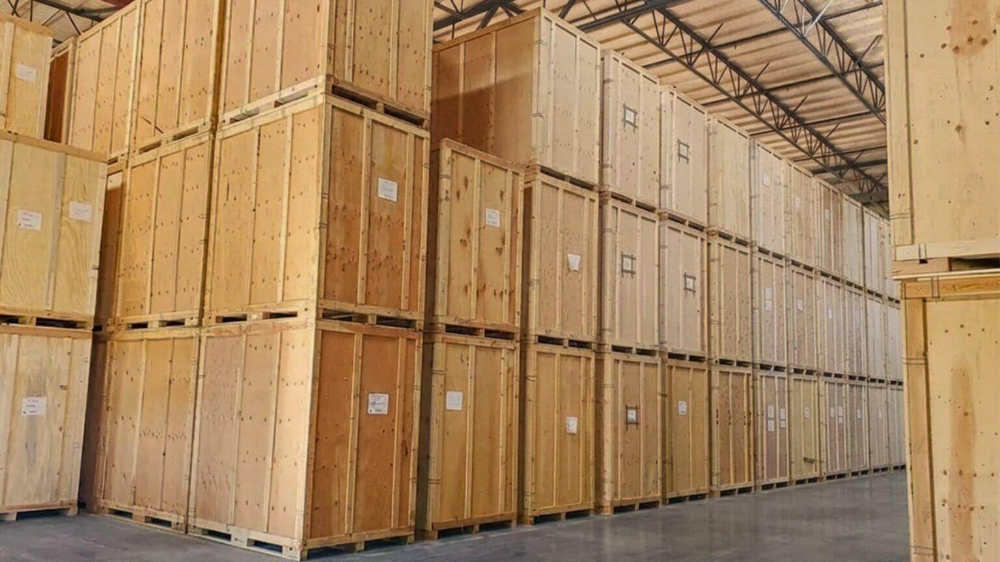

Supporting global companies with China-based sourcing and manufacturing coordination for industrial products and equipment.
ChenBridge helps international companies identify qualified suppliers, manage communication, and coordinate local execution throughout the sourcing process.
Discuss Your Project
Supporting sourcing activities for machinery, industrial equipment, and engineered products through qualified China manufacturers.
Connecting companies with capable suppliers for customized components, fabricated parts, and industrial assemblies.
Supporting industrial packaging, export crates, and transportation solutions for large and sensitive equipment.
Coordinating customized China sourcing projects requiring supplier evaluation and execution support.
Many companies struggle to identify suppliers with the right technical capability, production experience, and export reliability. ChenBridge helps evaluate and connect customers with suitable manufacturers.
Industrial projects often involve complex drawings, specifications, materials, and production requirements. ChenBridge helps align communication between customers and suppliers.
Successful sourcing requires continuous follow-up on production progress, quality expectations, and delivery commitments.
Supporting sourcing projects for industrial machinery, production equipment, and engineered systems.
Connecting customers with manufacturers for fabricated parts, assemblies, and customized OEM requirements.
Supporting heavy-duty crates, protective packaging, and logistics solutions for industrial shipments.
Managing customized sourcing projects requiring supplier development and local coordination.
Whether you need supplier sourcing, manufacturing support, or China-based project coordination, ChenBridge helps you build reliable supply chain solutions.
Contact us:
contact@chenbridge.com